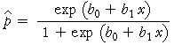

Eine Funktion, die für alle Werte von X zwischen 0 und 1 liegt
Eine lineare Gleichung kann keine angemessenen Vorhersagen, für das Mengenverhältnis in einer abhängigen Kategorie, bei extremen Werten von X, liefern. Es gibt mehrere nichtlineare Gleichungen, die die Bedingung erfüllen, dass ihr Wert zwischen 0 und 1, für alle Werte von X liegt. Aber die einfachste dieser Gleichungen ist die logistische Funktion.
| vorhergesagtes Mengenverhältnis, |  |
|---|
Logistische Funktionen erfüllen die Bedingung, weil…
Die Parameter einer logistischen Funktion
Die Konstanten b0 und b1 haben einen ähnlichen Effekt auf die Form einer logistischen Funktion zu den dazugehörigen Parametern einer linearen Gleichung.
Wir bezeichnen b0 als Achsenabschnitt der Funktion und wir bezeichnen b1 als Steigung.
Das Diagramm unten zeigt eine logistische Funktion und es hat zwei Schieberegler, welche dazu verwendet werden können, die Werte der zwei logistischen Parameter anzupassen.
Verwende die Schieberegler, um zu beobachten, dass…
Diese Eigenschaften treffen auch auf lineare Modelle zu.